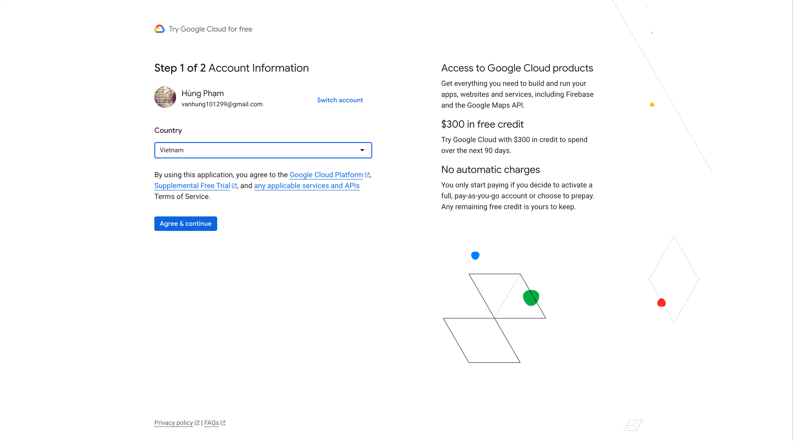
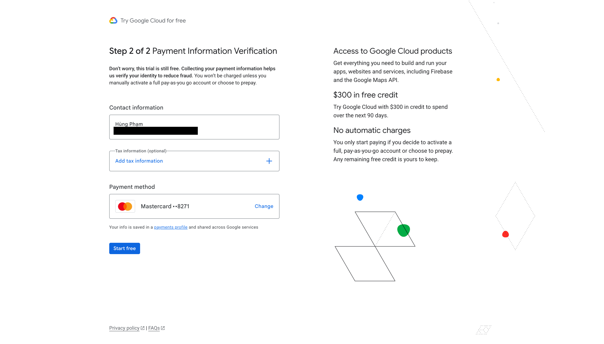
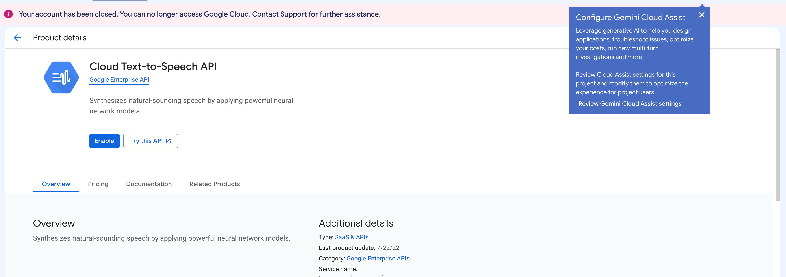

Cách lấy Google API key để LiveQR TikTok đọc bình luận
LiveQR TikTok dùng Google Cloud Text-to-Speech để biến bình luận thành giọng nói. Bạn tạo một API key trong chính tài khoản Google của mình, sau đó dán key vào app. Quy trình dưới đây bám theo tài liệu Google Cloud hiện hành và phù hợp cho người mới bắt đầu.
Yên tâm về chi phí: Google tính theo ký tự (không phải token). Riêng giọng Standard có 4 triệu ký tự miễn phí mỗi tháng — với nhu cầu đọc bình luận của một streamer thông thường, mức này rất rộng rãi để dùng hằng ngày mà không phải lo phát sinh thêm phí, miễn là tổng mức dùng vẫn nằm trong quota. Cloud Text-to-Speech vẫn yêu cầu project có Billing đang hoạt động, vì vậy nên tạo cảnh báo chi phí để chủ động theo dõi.
Chuẩn bị trước khi làm
- Một tài khoản Google bạn kiểm soát lâu dài.
- Máy tính để mở Google Cloud Console.
- Phương thức thanh toán nếu Google yêu cầu khi kích hoạt Billing.
- LiveQR TikTok đã cài trên máy để dán key sau cùng.
Không dùng key của người khác và không gửi key cho hỗ trợ qua Zalo, Facebook hay ảnh chụp màn hình. Key gắn với quota và billing của project.
Tạo API key trong 6 bước
- Đăng nhập Google Cloud ConsoleMở Google Cloud Console và đăng nhập. Nếu đây là lần đầu dùng Cloud, Google sẽ hướng dẫn bạn chọn quốc gia, đồng ý điều khoản và thiết lập Billing. Hãy nhập thông tin chính xác theo yêu cầu trên màn hình.

Quy trình khởi tạo có thể khác đôi chút tùy tài khoản Google. - Tạo project riêng cho LiveQRỞ thanh trên cùng, bấm tên project hiện tại → New Project. Đặt tên dễ nhận biết, ví dụ
LiveQR TTS, rồi bấm Create. Sau khi tạo, kiểm tra lại tên project này đang hiển thị ở thanh trên cùng trước khi làm bước tiếp theo. - Liên kết Billing với projectVào Billing và làm theo hướng dẫn để liên kết tài khoản thanh toán với project vừa tạo. Google ghi rõ rằng Text-to-Speech cần Billing hoạt động, kể cả khi mức sử dụng vẫn nằm trong quota miễn phí.

Chỉ hoàn tất các bước Google hiển thị cho tài khoản của bạn. - Bật Cloud Text-to-Speech APIDùng ô tìm kiếm trên đầu trang, nhập Cloud Text-to-Speech API, mở đúng dịch vụ rồi bấm Enable. Khi đã bật, nút này sẽ đổi thành Manage hoặc trạng thái tương đương.

API phải được bật trong đúng project chứa API key. - Tạo API key và chỉ cho phép TTS sử dụngVào APIs & Services → Credentials → Create credentials → API key. Đặt tên
LiveQR TikTok. Trong API restrictions, chọn Restrict key và chọn duy nhất Cloud Text-to-Speech API, sau đó bấm Save. Google yêu cầu key tạo từ Console có ít nhất một API restriction. - Sao chép key và dán vào LiveQR TikTokCopy chuỗi key, mở phần cài đặt đọc bình luận / giọng Google trong LiveQR TikTok, dán vào ô Google API Key và lưu. Hãy thử một bình luận ngắn trước khi bắt đầu live.
💡 Lưu ý về “Application restrictions”: Đừng chọn Website restrictions cho ứng dụng desktop, vì app không chạy từ website. API restriction tới Cloud Text-to-Speech API là phần bắt buộc và phù hợp nhất ở đây. Nếu nghi ngờ key đã lộ, hãy xóa key đó và tạo key mới ngay.
Dán key vào LiveQR TikTok
Sau khi lưu, dùng nút test giọng đọc nếu có, hoặc mở một phiên live thử với comment ngắn. Nếu app báo lỗi, xem phần xử lý lỗi ở dưới thay vì liên tục tạo thêm key.
Không dán API key vào Browser Source của OBS, caption TikTok, ảnh chụp màn hình, livestream hay chat nhóm. Google khuyến nghị không đưa key vào mã nguồn hoặc nơi công khai vì người khác có thể dùng quota và gây chi phí cho project của bạn.
Dùng miễn phí được bao lâu?
Google tính Text-to-Speech theo số ký tự gửi đi, bao gồm cả dấu cách — không tính theo token. Tại thời điểm cập nhật, bảng giá của Google nêu mức miễn phí hằng tháng là 4 triệu ký tự cho giọng Standard và 1 triệu ký tự cho WaveNet; sau mức đó tính phí theo loại giọng.
Với streamer đọc bình luận ở tần suất thông thường, 4 triệu ký tự/tháng là mức dùng thoải mái: bạn có thể dùng hằng ngày mà không mất thêm phí khi chưa vượt quota Standard. Nếu livestream rất dài, đọc mọi comment hoặc dùng giọng khác, hãy theo dõi mức dùng trong Billing. Xem bảng giá Text-to-Speech vì quota và giá có thể thay đổi.
Vào Billing → Budgets & alerts để tạo cảnh báo email ở các ngưỡng thấp, ví dụ 50%, 80% và 100%. Budget alert chỉ gửi cảnh báo, không tự khóa chi tiêu. Nếu cần dừng hoàn toàn, hãy chủ động tắt API hoặc tắt Billing của project (việc này sẽ làm LiveQR TikTok không gọi được TTS).
Lỗi thường gặp và cách xử lý
“API has not been used in project … or it is disabled”
API chưa được bật, hoặc key lấy từ project khác. Kiểm tra project đang chọn ở đầu Google Cloud Console, bật lại Cloud Text-to-Speech API, rồi chờ vài phút và thử lại.
“Billing account not configured”
Project chưa liên kết Billing, hoặc key thuộc project khác. Vào Billing, kiểm tra project LiveQR TTS đã được liên kết rồi thử lại.
“Your account has been closed” hoặc “partially suspended”
Google đang yêu cầu xác minh tài khoản thanh toán hoặc danh tính. Mở email từ Google Payments, làm đúng quy trình xác minh được yêu cầu và chờ Google hoàn tất. Không có cách hợp lệ để bỏ qua bước này.
“API key not valid” hoặc “Permission denied”
Copy lại key để loại trừ thiếu ký tự. Trên trang Credentials, xác nhận key vẫn hoạt động và phần API restrictions có Cloud Text-to-Speech API. Đồng thời kiểm tra API đã được bật trong chính project của key.
Key bị lộ hoặc nghi bị dùng trái phép
Vào APIs & Services → Credentials, xóa key cũ ngay rồi tạo key mới. Sau đó kiểm tra báo cáo Billing để xem có mức dùng bất thường không. Đừng tiếp tục sử dụng key đã lộ.
Nguồn chính thức để đối chiếu
- Google Cloud: Get started with Text-to-Speech — yêu cầu project, Billing và bật API.
- Google Cloud: Manage API keys — cách tạo và giới hạn API key.
- Google Cloud: Text-to-Speech pricing — quota miễn phí và đơn giá hiện hành.
- Google Cloud: Budgets and alerts — cách hoạt động của cảnh báo ngân sách.
Sẵn sàng đọc bình luận bằng giọng Google?
Sau khi dán key, hãy test một comment ngắn trước khi lên sóng. Nếu cần hỗ trợ cài LiveQR TikTok hoặc kiểm tra lỗi kết nối, nhắn Zalo cho đội ngũ LiveQR.
Câu hỏi thường gặp
Bạn cần bật Billing, nhưng giọng Standard có 4 triệu ký tự miễn phí mỗi tháng. Với streamer đọc bình luận thông thường, mức này thường đủ để dùng hằng ngày mà không phát sinh phí; phí chỉ tính khi vượt quota hoặc dùng loại giọng có mức quota khác.
Mở email từ Google Payments, bấm Start verification và hoàn thành quy trình bằng giấy tờ Google chấp nhận. Chờ xác minh hoàn tất trước khi quay lại bật API; không có cách bỏ qua bước này.
Không. API key gắn với quota và Billing của project. Chỉ dán vào LiveQR TikTok trên máy bạn; không đăng ảnh, gửi qua chat công khai hay đưa vào OBS.
Kiểm tra kết nối mạng, API đã bật và billing đã liên kết đúng project. Sau đó kiểm tra phần cài đặt âm thanh của LiveQR TikTok và thiết bị output trên máy.